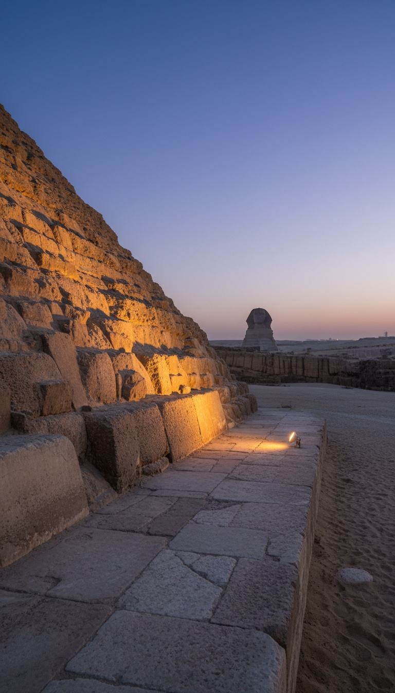

The Great Pyramid of Giza was supposedly built in 20 years by the pharaoh Khufu around 2560 BCE. The arithmetic makes that impossible, and the physical evidence points to something much older sitting underneath the official story.
Google searches for the question of who really built Giza are up roughly 86 percent in recent months. There is a reason. The receipts have been piling up since 1991, and the 2017 muon scan blew the lid off. Let me walk you through what conventional Egyptology has been quietly working around.

The 20-Year Timeline Fails Basic Arithmetic
The Great Pyramid contains an estimated 2.3 million limestone and granite blocks, some weighing up to 80 tons in the King's Chamber ceiling. Mark Lehner and Zahi Hawass, the two most cited defenders of the conventional timeline, both anchor construction to Khufu's roughly 23-year reign, with actual building compressed to about 20 years.
Divide 2.3 million stones by 20 years of continuous work. You get one block quarried, transported, dressed, and precision-set every 4 minutes. Nonstop. Day and night. For two decades.
No modern experimental archaeology project has come close to demonstrating this pace. The 1999 NOVA documentary attempt led by Lehner and stonemason Roger Hopkins managed a small pile of rough blocks in three weeks. That is the reconstruction the field still cites.
The ScanPyramids Void Nobody Wants to Open
In November 2017, the ScanPyramids mission published in the journal Nature. Using muon tomography, three independent teams from Nagoya University, KEK, and CEA in France detected a large void above the Grand Gallery. Roughly 30 meters long, or about 100 feet.
The void has no known entrance. No door. No corridor connects to it in any current map of the pyramid's interior. It has been sealed inside solid limestone for approximately 4,500 years.
Egypt's Ministry of Antiquities acknowledged the finding, then Zahi Hawass publicly dismissed it as a construction gap of no significance. No excavation has been authorized. The void remains untouched.
Robert Schoch and the Sphinx That Predates Egypt
In 1991, Boston University geologist Robert Schoch presented findings at the Geological Society of America convention in San Diego. His analysis of the vertical fissures on the Sphinx enclosure walls identified the erosion as caused by prolonged, heavy precipitation. Not wind. Not sand. Rain.
The Sahara has been arid for roughly 5,000 years. The last sustained wet period in the eastern Sahara, documented in paleoclimate cores published by researchers including Rudolph Kuper and Stefan Kropelin in Science in 2006, ended around 7,000 BCE at the latest in that region.
That places the carving of the Sphinx enclosure before 5,000 BCE at minimum. Dynastic Egypt begins around 3,100 BCE with Narmer. No pharaoh in the historical record claims to have built the Sphinx. The Dream Stele of Thutmose IV, erected around 1400 BCE between its paws, describes finding it already buried in sand.
The Sphinx was weathered by rain that stopped falling on Egypt before the first pharaoh was born.
The Khufu Cartouche That Smells Like a Forgery
The Great Pyramid contains no inscriptions naming its builder anywhere in its finished chambers. This is unique among major Egyptian monuments. Khufu's father Sneferu left his name across three pyramids at Meidum and Dahshur. Khufu's own mortuary temple was a name-stamping industry.
The single piece of onsite evidence linking the Great Pyramid to Khufu is a red ochre cartouche discovered in 1837 by British Colonel Richard William Howard Vyse. It sits in one of the so-called relieving chambers above the King's Chamber, a space Vyse himself blasted open with gunpowder.
Vyse's own journals, held today in the collection of the Griffith Institute at Oxford, record that his workers had been previously caught using red paint to fake finds. The cartouche was reported by Vyse alone, in a chamber accessible only through his own explosive breach. Egyptologist Zecharia Sitchin and, more recently, researcher Scott Creighton have argued the mark is a 19th-century fabrication. The original chamber has never been independently reexamined for authentication.
Cholula, and the Pattern Nobody Talks About
Six thousand miles from Giza sits the Great Pyramid of Cholula in Puebla, Mexico. By volume, it is the largest pyramid ever built on Earth. Its indigenous name is Tlachihualtepetl, the artificial mountain.
Its construction is dated by mainstream archaeology to phases beginning in the 3rd century BCE. The local Nahua tradition, recorded by 16th-century Dominican friar Diego Duran in his Historia de las Indias de Nueva Espana, attributes it to giants who lived before the current age of humanity.
Both structures share the same core anomaly. Massive coordinated stoneworking. Astronomical alignment. And a builder culture the actual descendants credit to a predecessor civilization they consider mythic. The pattern is not confined to Egypt.
What the Institutions Are Protecting
The Egyptian Museum in Cairo holds the artifacts. The Supreme Council of Antiquities controls the excavation permits. Access to reexamine the Vyse chambers, or to drill a borehole into the ScanPyramids void, requires ministerial approval that has not been granted to any independent team.
Graham Hancock has been requesting reinvestigation of the Sphinx enclosure since his 1995 book Fingerprints of the Gods. The response from Hawass, on the record in multiple 2015 to 2023 interviews, has been personal denunciation rather than geological rebuttal.
When the institutional response to a stratigraphic question is character attack, the question is usually the one that matters.
A pyramid whose construction rate has never been demonstrated. A sealed void nobody is allowed to open. A monument next door that was weathered by rain that stopped falling before dynastic Egypt existed. A single cartouche produced by a man whose workers faked finds with red paint.
If the builders of Giza were not the people history assigns credit to, then everything downstream of that assumption is wrong. The dates. The technology curve. The map of who we were before we started writing our own story down. What else is sitting inside that limestone with no door on it? Drop your theory in the comments. I read every one.
Before you go
7 books the Vatican doesn't want you reading. Free PDF — the texts they cut, with sources. Joined by 140+ Inner Circle members.
No spam. Unsubscribe anytime.
Go deeper
The Hidden Canon, Vol. I — Enoch. Jubilees. Thomas. Mary. Judas. 90 pages, 14 chapters, every receipt cited. The books your Bible quietly removed.
Read the Canon →Books that informed this investigation
As an Amazon Associate, Hidden Epoch earns from qualifying purchases. Cost to you: nothing.
Research safely
The VPN we use to research without being tracked. First 3 months free.
Get NordVPN →